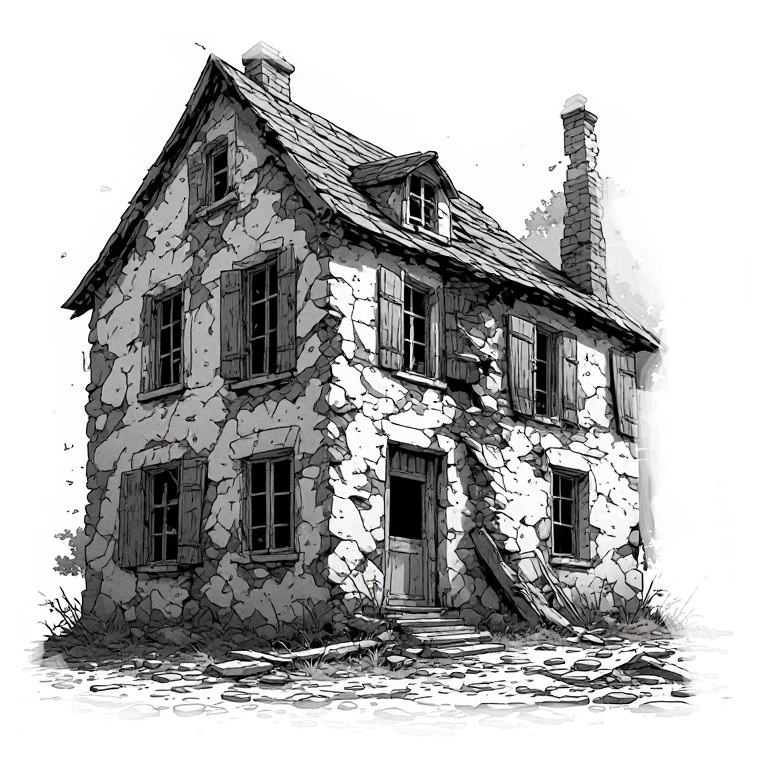
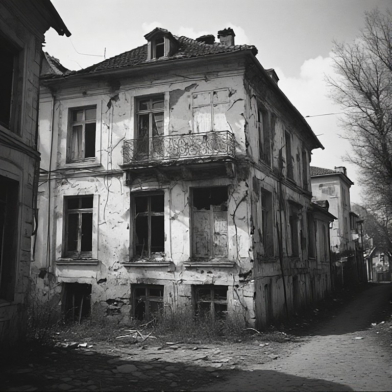
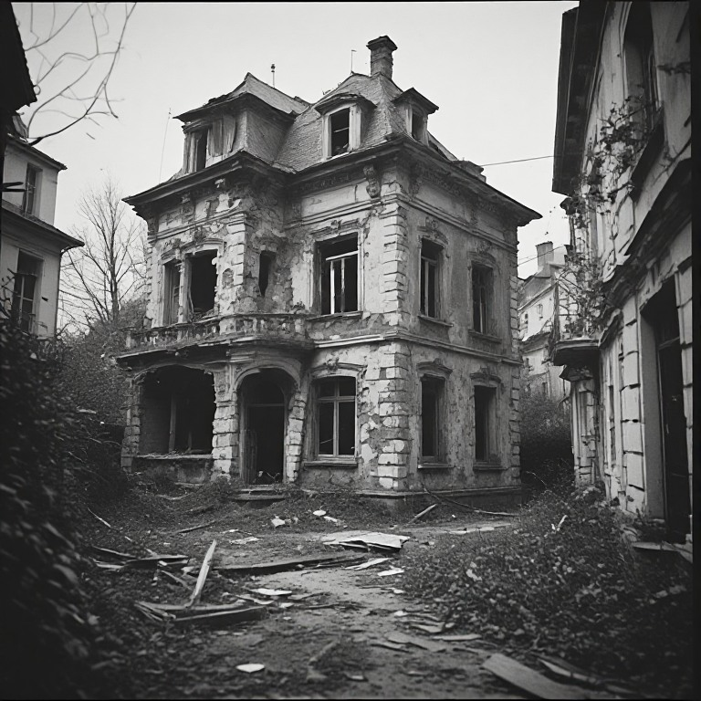
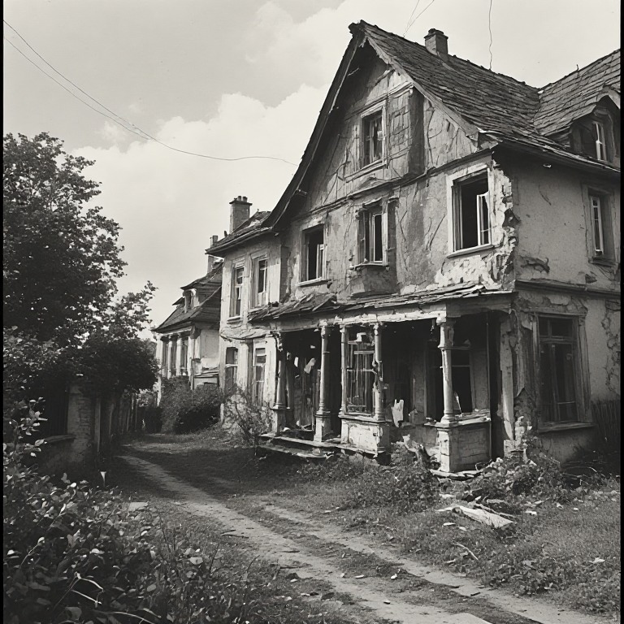
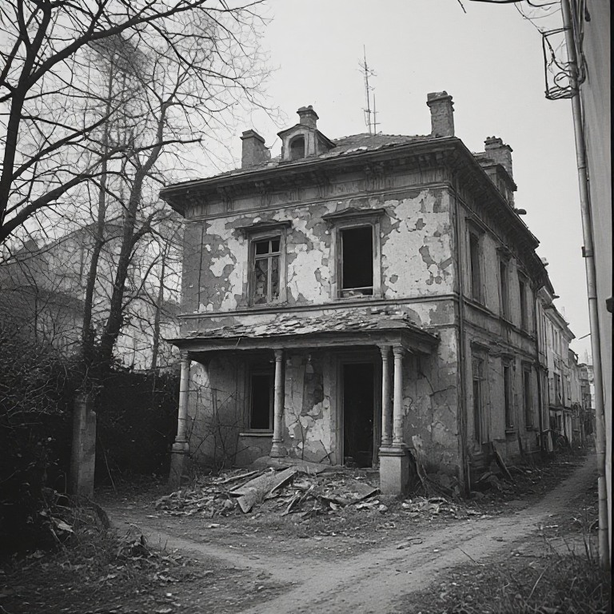

La vacance dans le logement en Nouvelle-Aquitaine
Analyse quantitative et statistique

1. Contexte et objet de l’étude
La vacance est un enjeu majeur du logement aujourd’hui largement pris en compte dans les politiques locales pour la production de logements, mais une vacance structurelle, longue (2 ans et plus) persiste souvent sur les territoires : elle n’est pas négligeable. Cette vacance est conséquente sur les villes moyennes hors littoral, les petites villes et dans la ruralité.
Dans un contexte général de nécessité de produire des logements dans l’existant afin de garantir une meilleure gestion économe du foncier, la résorption de la vacance s’impose ainsi toujours comme un enjeu majeur.
La présente étude élaborée conjointement entre le Cerema et la DREAL Nouvelle Aquitaine a vocation à présenter un état des lieux de la vacance sur la région Nouvelle-Aquitaine sur la base LOVAC actualisée du Ministère des Finances, suite aux évolutions de cette dernière (mise en place d’une refonte du calcul avec l’outil «GMBI» Gestion de mon bien immobilier d’après la déclaration des propriétaires fonciers et évolution des méthodes de recensement). L’étude présente la situation régionale, les tendances générales et les évolutions de la vacance de longue durée ces dernières années puis une analyse fine et territorialisée de la vacance avec des documents complémentaires (non joints dans le présent document) :
• Une matrice (document type calc/excel) détaillant les chiffres LOVAC de la vacance selon les caractéristiques des logements (EPCI et niveau communal) :
Les caractéristiques des logements vacants présentés dans la matrice :
❖ nombre et part de logements vacants depuis plus de 2 ans,
❖ durée de vacance,
❖ typologie du parc (type de logement, année de construction)
❖ localisation (à définir en lien avec le maître d’ouvrage)
❖ qualité du bâti
❖ …


• Une cartographie de la vacance pour 70 villes, à l’échelle des quartiers


• Deux documents annexes : un premier qui propose une liste la plus exhaustive possible des outils et leviers existants pour lutter contre la vacance (repérage, outils opérationnels, coercitifs, financiers, procédures, outils programmatiques…). Un second document annexe présentant un court guide court à destination des DDTM dans leur dialogue à destination des élus (pourquoi lutter contre la vacance, quel type de vacance, quels outils et quelle démarche engager ?). Ces deux derniers documents ne sont disponibles que pour les services de l’État.
Une étude qui cible la vacance de longue durée, dite structurelle : définitions
La vacance structurelle correspond à une inoccupation qui se prolonge en raison d’obstacles à l’occupation ou à la remise sur le marché du logement. Ces obstacles peuvent tenir au bien lui-même — dégradation, travaux importants, caractéristiques inadaptées à la demande —, au contexte immobilier local — demande insuffisante notamment — ou à la situation du propriétaire : succession bloquée, difficultés financières, réticence à louer ou maintien volontaire du bien hors du marché. Elle ne résulte donc pas seulement de la rotation ordinaire des occupants. La notion de vacance strucurelle se rapproche de la notion de vacance de longue durée (plus de deux ans) qui est une catégorie définie par la durée d’inoccupation, plutôt que directement par ses causes. Dans LOVAC, le seuil de plus de deux ans est retenu pour repérer les logements du parc privé présumés relever de la vacance structurelle, notamment pour orienter les actions de remise sur le marché.
Ce seuil constitue une convention de repérage, pas une frontière absolue : un logement vacant depuis moins de deux ans peut déjà présenter des blocages structurels ; inversement, dépasser deux ans ne suffit pas à déterminer la cause de la vacance. Il est à noter que, dans les fichiers fiscaux, la vacance de plus de deux ans correspond à un logement identifié comme vacant à au moins trois 1er janvier consécutifs. Cette observation ne garantit pas l’absence de toute occupation entre ces dates dans LOVAC.
La vacance frictionnelle, ou vacance de rotation, correspond à l’inoccupation temporaire d’un logement entre deux occupants : départ d’un ménage, recherche d’un nouveau locataire ou acquéreur, vente, délai d’installation et éventuelle remise en état. Généralement de courte durée — quelques jours à quelques mois —, elle accompagne le fonctionnement du marché et la mobilité résidentielle. Elle ne traduit pas nécessairement une difficulté durable à remettre le logement en occupation.


2. L’évolution de la vacance globale des logements
2.1 Précautions méthodologiques
Deux sources complémentaires sont mobilisées dans cette étude : les données du recensement de la population de l’Insee pour analyser l’évolution de la vacance totale, et les données LOVAC pour caractériser la vacance du parc privé à un millésime donné. Des travaux locaux peuvent compléter cette approche, notamment par le croisement de sources et la vérification des situations sur le terrain. Le recensement INSEE ne renseigne toutefois pas la durée d’inoccupation : il ne permet donc pas, à lui seul, de distinguer la vacance de rotation des situations durablement bloquées.
Les comparaisons brutes entre les millésimes LOVAC traversant les ruptures de série ne sont pas pertinentes pour mesurer l’évolution de la vacance. Le passage aux déclarations d’occupation GMBI à partir du millésime 2024, puis les modifications de sélection des logements intervenues en 2025, affectent leur comparabilité. Cette réserve concerne aussi bien l’échelle nationale que les échelles locales.
Le recensement constitue ainsi la principale référence commune retenue ici pour l’analyse des tendances. Ses résultats doivent néanmoins être interprétés en tenant compte des évolutions de la collecte.
2.2 En Nouvelle-Aquitaine : une forte hausse de la vacance entre 2006 et 2016, suivie d’une quasi-stabilisation de 2016 à 2022
D’après les données du recensement, le nombre de logements vacants en Nouvelle-Aquitaine fluctue autour de 200 000 entre 1982 et 2006. Leur part dans l’ensemble du parc diminue sur cette période, passant de 8,73 % à 6,61 %. Entre 2006 et 2016, leur nombre augmente fortement, de 201 472 à 294 627, et leur part atteint 8,54 %.
Entre 2016 et 2022, le nombre de logements vacants se stabilise presque : il augmente de 0,8 %, pour atteindre 296 999 logements, alors que l’ensemble du parc progresse de 6,2 %. Le taux de vacance mesuré diminue donc de 0,43 point, à 8,11 %. Sur l’ensemble de la période 2006–2022, les effectifs restent cependant en hausse de 47,4 %, et le taux supérieur d’environ 1,5 point à son niveau de 2006.
La tendance régionale se traduit donc par une hausse importante au cours de la décennie 2006–2016 puis une quasi-stabilisation des effectifs et un recul de leur part entre 2016 et 2022.
Évolution du nombre de logements par catégorie en historique pour la Nouvelle-Aquitaine
| Catégorie de logement | 1968 | 1975 | 1982 | 1990 | 1999 | 2006 | 2011 | 2016 | 2022 |
|---|---|---|---|---|---|---|---|---|---|
| Ensemble Nouvelle Aquitaine | 1 716 457 | 1 954 084 | 2 220 304 | 2 488 926 | 2 742 006 | 3 045 767 | 3 255 884 | 3 451 872 | 3 664 327 |
| Résidences principales | 1 442 524 | 1 596 260 | 1 787 373 | 1 975 871 | 2 210 131 | 2 459 921 | 2 610 999 | 2 742 949 | 2 922 921 |
| Résidences secondaires | 135 247 | 183 573 | 239 154 | 310 604 | 336 075 | 384 373 | 388 078 | 414 296 | 444 406 |
| Logements vacants | 138 686 | 174 251 | 193 777 | 202 451 | 195 800 | 201 472 | 256 807 | 294 627 | 296 999 |
| Part des logements vacants dans l’ensemble du parc | 8,08 % | 8,92 % | 8,73 % | 8,13 % | 7,14 % | 6,61 % | 7,89 % | 8,54 % | 8,11 % |
| Année | Logements vacants | Part du parc total |
|---|---|---|
| 2006 | 201 472 | 6,61 % |
| 2011 | 256 807 | 7,89 % |
| 2016 | 294 627 | 8,54 % |
| 2022 | 296 999 | 8,11 % |
Ce constat ne permet pas de conclure à une stabilisation dans chaque territoire ni à une diminution de la seule vacance de longue durée. A titre de comparaison, les estimations annuelles du parc de logements de l’INSEE et du SDES montrent également une hausse passée suivie d’un recul du taux à l’échelle de la France hors Mayotte : 6,2 % en 2005, 8,1 % en 2019 et 7,7 % en 2025.
2.3 Une hausse de la vacance totale ne signifie pas nécessairement une hausse de la vacance durable
La durée d’inoccupation est déterminante pour interpréter les évolutions. La vacance courte peut notamment correspondre à une rotation entre occupants, à une vente, à une première mise en service ou à des travaux. Elle ne peut pas être assimilée systématiquement à une vacance sans difficulté, pas plus que le seuil de deux ans ne permet, à lui seul, d’identifier toutes les causes de vacance structurelle.
Le SDES documente une progression de la vacance de moins d’un an en France métropolitaine : rapportée au nombre de résidences principales, elle passe de 4,1 % en 2001 à 5,0 % en 2011 et 5,4 % en 2021, selon Filocom. Ce résultat concerne la France métropolitaine dans son ensemble ; il ne mesure pas spécifiquement la tendance des marchés tendus ni sa contribution à la hausse régionale observée dans le recensement INSEE.
Par exemple, l’étude de l’a-urba sur le parc privé de Bordeaux Métropole apporte un éclairage local : entre 2013 et 2019, le nombre total de logements vacants passe d’environ 24 400 à 27 400 (25 620 en 2022), cette hausse portant essentiellement sur la vacance de moins d’un an. À l’inverse, les logements vacants depuis au moins deux ans diminuent de 5 583 à 5 186 (soit −7 %).
L’exemple montre qu’une progression de la vacance totale peut coexister avec une diminution de la vacance longue, sans préjuger des évolutions après 2019.
| Territoire | Vacants en 2011 | Vacants en 2022 | Taux en 2011 | Vacants en 2022 |
|---|---|---|---|---|
| Bordeaux, commune | 10 134 | 12 026 | 6,98 % | 7,14 % |
| Bordeaux Métropole | 19 722 | 25 620 | 5,28 % | 5,54 % |
La hausse de la vacance s’inscrit également, comme sur Bordeaux et les autres territoires tendus, un contexte de croissance du parc (constructions neuves). La croissance du parc peut s’accompagner d’une augmentation du nombre de logements temporairement vacants. Une augmentation de la vacance de rotation peut être liée à des changements d’occupants plus nombreux, à un allongement des périodes d’inoccupation ou à une modification de la composition du parc.
Le poids du parc locatif privé, davantage soumis à la rotation, constitue notamment un facteur déterminant et tous ces mécanismes doivent être vérifiés localement.
2.4 Une augmentation de la vacance dans certaines types de territoires depuis 2016
Si dans les territoires les plus tendus (métropole bordelaise, littoral, la vacance totale stagne ou diminue, avec une baisse de la vacance de longue durée et une hausse de la vacance frictionnelle, ce constat ne peut pas être généralisés à toutes les catégories de territoires.
La progression de la vacance totale est plus forte depuis 2016 jusqu’à aujourd’hui dans les territoires en déprise démographique et dans les centres-villes des agglomérations moyennes, hors littoral : voir carte ci-dessous
{kind=link}
La carte présentée fait en effet état d’une augmentation de la vacance totale beaucoup plus prononcée à l’Est de la région, dans les secteurs ruraux, des agglomérations comme Poitiers ou Pau.
A contrario, le littoral présente des taux d’évolution négatifs (soit une diminution de la vacance ou faibles -La Rochelle par exemple-.
Il y a quelques cas particuliers expliqués précédemment : Bordeaux, dont l’augmentation de la vacance affichée sur la carte est trompeuse et surtout caractérisée par une vacance frictionnelle, ou d’autres territoires dont certaines résidences secondaires, importantes en nombre, ont pu être assimilées à des logements vacants.
3. Etat des lieux de la vacance : cartographie
Selon les données LOVAC, la vacance des logements en Nouvelle-Aquitaine est estimée à 9,5 %, soit environ 340 000 logements. Une partie de ces logements n’est inoccupée que temporairement, notamment entre deux occupants ou à l’occasion de travaux de remise en état. Cette vacance conjoncturelle accompagne la rotation des ménages et l’entretien du parc, contribuant ainsi à la fluidité des parcours résidentiels.
La présente étude se concentre sur la vacance de longue durée, définie ici comme une inoccupation depuis au moins deux ans et retenue comme indicateur de la vacance structurelle. L’objectif est de repérer les logements durablement inoccupés pour lesquels les acteurs locaux peuvent engager des actions visant à favoriser leur remise sur le marché.
En Nouvelle-Aquitaine, au 1er janvier 2024, cette vacance de longue durée concerne environ 154 505 logements, soit 4 % du parc de logements. Sa répartition départementale, établie à partir des bases de données LOVAC pour le parc privé et RPLS pour le parc social est présentée ci-après.
Logements vacants (+2 ans) — Nouvelle-Aquitaine
| Département | Nb. vacants | Taux | Répartition | Evolution |
|---|

Cette ne mesure pas l’évolution de la vacance mais confirme clairement la tendance à une vacance installée qui plus importante dans les départements de l’Est (+ de 5 % de logements vacants -longue durée-), et a contrario plus faible sur le littoral. La carte suivante de la vacance par EPCI confirme cette une vacance plus importante sur les EPCI de l’Est de la région.
3.1 La vacance par EPCI
{kind=link}
La carte met en évidence un contraste ouest–est marqué de la vacance de plus de deux ans. Les taux sont généralement plus faibles sur le littoral et dans les intercommunalités des principaux pôles urbains, où ils se situent souvent entre 1 et 4 %.
À l’inverse, les niveaux les plus élevés, compris entre 9 et 14 %, se concentrent surtout dans le nord-est et l’est de la région, notamment dans la Creuse et l’est de la Corrèze. De nombreux territoires intérieurs présentent également des taux élevés, entre 6 et 9 %.
Cette répartition reste toutefois contrastée : les intercommunalités de Limoges, de Périgueux ou d’Angoulême affichent des taux plus faibles que plusieurs des territoires qui les entourent.
3.2 La vacance par commune
{kind=link}
À l’échelle communale, la carte confirme des taux de vacance de plus de deux ans généralement plus faibles sur le littoral et autour des principaux pôles urbains, souvent inférieurs à 4,7 %. Les taux supérieurs à 9,8 % se concentrent davantage dans le nord-est et certains territoires intérieurs, mais des poches de vacance élevée apparaissent également dans le centre et le sud de la région.
Certaines communes relèvent ainsi de la classe la plus élevée, comprise entre 14,5 et 37,2 %. Cette représentation révèle surtout une forte hétérogénéité entre communes voisines, que les moyennes intercommunales atténuent, et souligne l’intérêt d’une analyse locale pour préciser les secteurs les plus concernés.
Les données ayant permis de réaliser cette carte, disponible dans la matrice, mettent en évidence plusieurs situations de vacance particulièrement marquées. Certaines villes moyennes cumulent des taux élevés et des volumes importants de logements durablement vacants, comme Aubusson ou Tulle.
Dans plusieurs de ces territoires, une part importante de cette vacance est ancienne, avec des taux de vacance de plus de cinq ans atteignant des taux important.
Quelques petites communes affichent des niveaux extrêmement élevés — par exemple Bousses : 37,2 %, Saint-Antoine-du-Queyret : 29,2 %, Saint-Georges : 27,9 % ou Saint-Pierre-le-Bost : 26 % — mais ces taux portent parfois sur seulement quelques dizaines de logements. Ils signalent néanmoins une vacance très profondément installée, particulièrement lorsque le taux à plus de cinq ans reste lui aussi élevé : 34,9 % à Bousses, 25,6 % à Saint-Georges, 21,1 % à Saint-Pierre-le-Bost.
À l’inverse, les principaux pôles urbains peuvent présenter des stocks importants en valeur absolue, mais des taux nettement plus faibles. Cette distinction entre volume et taux est essentielle pour identifier les territoires où la vacance constitue un phénomène réellement structurel. Bordeaux compte 4 740 logements vacants depuis plus de deux ans, mais ceux-ci ne représentent que 2,6 % du parc ; Limoges en compte 3 206, soit 3,7 % ; Pau 1 768, soit 3,2 % ; Poitiers 1 502, soit 2,6 %. Cela montre que le nombre brut de logements vacants ne suffit pas à qualifier la gravité d’une situation.
→ Une cartographie de 70 communes (métropole, agglomérations et petites villes) est disponible dans cet onglet. Elle présente la vacance par quartier IRIS et les variations au sein d’une même commune (nombre et % de logements vacants).
Des situations particulièrement marquées :
L'analyse communale fait apparaître plusieurs situations de vacance structurelle conséquente. En ne retenant que les communes comptant au moins 100 logements vacants depuis plus de deux ans, une vingtaine de territoires présentent des taux supérieurs à 10 %. Certaines communes cumulent un taux élevé et un stock conséquent, notamment Aubusson (494 logements ; 15,6 %), Bort-les-Orgues (362 ; 16,2 %), Tulle (1 139 ; 11,1 %) ou Fumel (319 ; 10,4 %). La durée de vacance constitue un indicateur supplémentaire de fragilité : dans plusieurs communes, plus de 60 % des logements vacants depuis deux ans le sont déjà depuis plus de cinq ans. Ces situations traduisent une vacance profondément installée, qui dépasse largement les phénomènes de rotation du marché.
Voir tableau suivant, extrait de la matrice réalisée par le CEREMA.

communes présentant les situations de vacance longue les plus marquées
Sélection : au moins 100 logements vacants depuis plus de 2 ans – LOVAC 2024
| Commune | Vacants +2 ans | Taux +2 ans | Vacants +5 ans | Taux +5 ans | Part des +5 ans parmi les +2 ans |
|---|---|---|---|---|---|
| Saint-Émilion | 218 | 17,1 % | 149 | 11,7 % | 68 % |
| Bort-les-Orgues | 362 | 16,2 % | 173 | 7,7 % | 48 % |
| Aubusson | 494 | 15,6 % | 278 | 8,8 % | 56 % |
| Auzances | 125 | 14,0 % | 80 | 9,0 % | 64 % |
| Bourganeuf | 237 | 13,5 % | 161 | 9,1 % | 68 % |
| Eymoutiers | 202 | 12,6 % | 141 | 8,8 % | 70 % |
| Montagne | 116 | 12,4 % | 79 | 8,4 % | 68 % |
| Châlus | 155 | 12,2 % | 114 | 9,0 % | 74 % |
| Boussac | 117 | 12,0 % | 78 | 8,0 % | 67 % |
| Lathus-Saint-Rémy | 117 | 12,0 % | 76 | 7,8 % | 65 % |
| Sainte-Foy-la-Grande | 226 | 11,9 % | 116 | 6,1 % | 51 % |
| Saint-Laurent-sur-Gorre | 113 | 11,9 % | 52 | 5,5 % | 46 % |
| Bussière-Poitevine | 198 | 11,8 % | 127 | 7,6 % | 64 % |
| Mézin | 118 | 11,8 % | 63 | 6,3 % | 53 % |
| Uzerche | 210 | 11,6 % | 132 | 7,3 % | 63 % |
| Chalais | 147 | 11,6 % | 93 | 7,4 % | 63 % |
| Corrèze | 102 | 11,3 % | 65 | 7,2 % | 64 % |
| Tulle | 1 139 | 11,1 % | 691 | 6,7 % | 61 % |
| Le Dorat | 132 | 11,1 % | 70 | 5,9 % | 53 % |
| Lubersac | 166 | 10,6 % | 105 | 6,7 % | 63 % |
| Fumel | 319 | 10,4 % | 184 | 6,0 % | 58 % |
4. Les caractéristiques des logements vacants (longue durée) du parc privé.
La vacance concerne quasiment uniquement le parc privé (locatif ou non) : dans tous les EPCI, 97 % au moins des logements vacants de plus de deux ans sont des logements privés. La matrice fournie (document à part disponible avec l’étude) fournit les caractéristiques du parc privé et social vacant.
Voir chapitre in fine sur la vacance dans le parc social.
4.1 Les logements vacants majoritairement anciens
Le parc privé vacant depuis plus de deux ans se caractérise par une forte surreprésentation des logements anciens. Ainsi, 68 % des logements durablement vacants ont été construits avant 1949, alors que cette période de construction ne représente que 33 % de l’ensemble du parc de logements régional.
À contrario, les logements plus récents sont nettement moins représentés parmi les logements vacants de longue durée. Les logements construits à partir de 1980 représentent 44 % du parc régional, mais seulement 16 % des logements vacants depuis plus de deux ans.
Ces résultats mettent ainsi en évidence un lien marqué entre ancienneté du bâti et vacance de longue durée. Ils peuvent notamment traduire une moindre adéquation d’une partie du parc ancien aux attentes actuelles ou des besoins plus importants en matière de rénovation et de remise aux normes. La période de construction ne permet toutefois pas, à elle seule, d’identifier les causes de la vacance.

4.2 Une majorité de maisons parmi les logements vacants qui cache des disparités entre les territoires

À l’échelle régionale, la répartition des logements privés vacants depuis plus de deux ans est relativement proche de celle de l’ensemble du parc : 71,9 % des logements durablement vacants sont des maisons, contre 69,3 % dans le parc régional. Les maisons ne sont donc que légèrement surreprésentées dans la vacance longue.
Cette moyenne régionale masque toutefois des situations locales très contrastées. Dans de nombreuses villes et communes-centres, la vacance de longue durée concerne majoritairement des appartements, tandis que dans les territoires ruraux, où le parc est essentiellement composé de maisons individuelles, celles-ci prédominent logiquement parmi les logements vacants.
À titre d’exemple, les appartements représentent la majorité des logements privés vacants de plus de deux ans à La Rochelle, Rochefort, Brive-la-Gaillarde, Aubusson ou encore Pau. Limoges compte 5 fois plus d’appartements vacants (longue durée) que de maison, Poitiers compte trois fois plus d’appartements vacants…
La nature du logement ne semble donc pas constituer, à elle seule, un facteur explicatif de la vacance longue : son analyse doit être mise en regard de la structure locale du parc et du type de territoire.
4.3 Une sur-représentation des petits logements
Les petits logements (T1-T2) sont nettement surreprésentés parmi les logements vacants depuis plus de deux ans. Ils représentent 40 % de la vacance longue, alors qu’ils ne constituent que 22 % de l’ensemble du parc régional.
À l’inverse, les grands logements (T5 et plus) sont sous-représentés parmi les logements durablement vacants : ils représentent 16 % des logements vacants depuis plus de deux ans, contre 26 % du parc régional. Les logements de taille intermédiaire (T3-T4) présentent une répartition plus proche de celle observée dans l’ensemble du parc, avec 44 % des logements vacants, contre 53 % du parc régional.
Ces résultats suggèrent ainsi que la vacance de longue durée touche proportionnellement davantage les petits logements, tandis que les grands logements apparaissent moins concernés.

4.4 Qualité du bâti : un parc vacant présentant des niveaux de qualité supposée contrastés
Le classement cadastral permet d’apporter une première indication sur la qualité générale des logements vacants. Les catégories les moins favorables, notamment les catégories 7 et 8, correspondent aux logements présentant les caractéristiques de bâti les plus dégradées. La catégorie 6, plus hétérogène, correspond à un niveau de qualité plus modeste et ne peut être assimilée systématiquement à un logement dégradé.
| Catégorie | 1re catégorie | 2e catégorie | 3e catégorie | 4e catégorie | 5e catégorie | 6e catégorie | 7e catégorie | 8e catégorie |
|---|---|---|---|---|---|---|---|---|
| Caractère architectural | Nettement somptueux | Particulièrement soigné | Belle apparence | Sans caractère particulier | Aspect délabré | |||
| Qualité de la construction | Excellente. Matériaux de tout premier ordre ou d’excellente qualité. Parfaite habitabilité. | Très bonne. Matériaux assurant une très bonne habitabilité. | Bonne. Mais construction d’une classe et d’une qualité inférieures aux précédentes catégories. | Courante. Matériaux utilisés habituellement dans la région, assurant des conditions d’habitabilité normales mais une durée d’existence limitée pour les immeubles récents. | Médiocre. Construction économique en matériaux bon marché présentant souvent certains vices. | Particulièrement défectueuse. Ne présente pas ou ne présente plus les caractères élémentaires d’habitabilité en raison de la nature des matériaux utilisés, de la vétusté, etc. | ||
Le classement cadastral entre notamment dans les critères utilisés pour le repérage du parc privé potentiellement indigne (PPPI), mais il ne permet pas, à lui seul, de déterminer l’état réel d’un logement ni l’ampleur des travaux nécessaires à sa remise en occupation.
Classement cadastral des logements vacants
| Département | 3 | 4 | 5 | 6 | 7 | 8 | ||||||
|---|---|---|---|---|---|---|---|---|---|---|---|---|
| Nb | % | Nb | % | Nb | % | Nb | % | Nb | % | Nb | % | |
À l’échelle régionale, 28,3 % des logements privés vacants depuis plus de deux ans relèvent des catégories cadastrales 3, 4 ou 5, correspondant aux niveaux de qualité les plus favorables parmi le parc étudié. En intégrant la catégorie 6, cette proportion devient nettement majoritaire. Elle dépasse notamment 80 % dans les Pyrénées-Atlantiques, en Gironde, dans les Landes et en Charente-Maritime.
Ces résultats suggèrent qu’une part importante du parc vacant de longue durée ne relève pas des catégories cadastrales les plus dégradées. Une partie de ces logements pourrait ainsi présenter un potentiel de remise en occupation avec des interventions limitées ou modérées. Cette hypothèse doit toutefois être confirmée par une analyse plus fine de l’état réel des logements, le classement cadastral ne permettant pas d’évaluer précisément la nature ni le coût des travaux nécessaires. Enfin, ce classement cadastral est parfois obsolète, les logements concernés n’ayant plus rien à avoir avec leur catégorie.
Lecture territoriale :
La répartition territoriale fait apparaître des différences sensibles dans la qualité cadastrale du parc vacant. Certains départements présentent une part relativement importante de logements relevant des catégories les plus favorables, tandis que d’autres concentrent davantage de logements classés dans les catégories inférieures.
Les Deux-Sèvres et les Pyrénées-Atlantiques se distinguent notamment par une proportion importante de logements vacants relevant des catégories cadastrales 3 à 5. La Vienne et la Creuse présentent une part plus importante de logements classés dans les catégories les moins favorables, ce qui peut traduire un potentiel de réhabilitation plus important. Il convient néanmoins de rester prudent : ces données constituent un indicateur de présomption et non une mesure directe de l’état du bâti ou du coût de sa remise sur le marché.




4.5 Localisation des logements privés vacants depuis plus de deux ans par rapport au zonage (ville centre, périphérie)
Afin de mieux cibler les actions des services de l’État et des collectivités en faveur de la remise sur le marché des logements vacants de longue durée, trois zones de localisation ont été définies :
• une zone centre, située dans l’enveloppe urbaine du territoire et à moins de 500 mètres d’un point d’intérêt ;
• une zone péri-centre, également située dans l’enveloppe urbaine, mais comprise entre 500 mètres et 1 kilomètre d’un point d’intérêt ;
• une zone hors agglomération, correspondant aux secteurs situés en dehors de ces deux premières zones.
La méthodologie précise de définition de ces trois catégories est présentée en annexe 3.
Localisation des logements vacants
| Département | Classe 1 Zone Centre |
Classe 2 Zone Péri-centre |
Classe 3 Hors agglomération |
|||
|---|---|---|---|---|---|---|
| Nb | % | Nb | % | Nb | % | |
À l’échelle régionale, 51,7 % des logements privés vacants depuis plus de deux ans sont situés en zone centre et 14,3 % en zone péri-centre. Au total, 66 % du parc vacant de longue durée, soit environ les deux tiers, se situe donc à moins d’un kilomètre d’un point d’intérêt.
Cette concentration dans les secteurs centraux ou péricentraux est toutefois inégale selon les départements. Elle est particulièrement marquée dans les Pyrénées-Atlantiques (80 %), le Lot-et-Garonne (71,6 %) et la Gironde (69,1 %). À l’inverse, elle est plus faible dans la Creuse (50,2 %), la Haute-Vienne (58,8 %) et la Dordogne (60,1 %).
Ces résultats montrent qu’une part importante de la vacance longue se situe dans des secteurs déjà urbanisés et relativement proches des centralités et équipements, ce qui peut constituer un enjeu prioritaire de mobilisation du parc existant. Cette localisation ne préjuge toutefois pas, à elle seule, de la facilité de remise sur le marché des logements concernés.